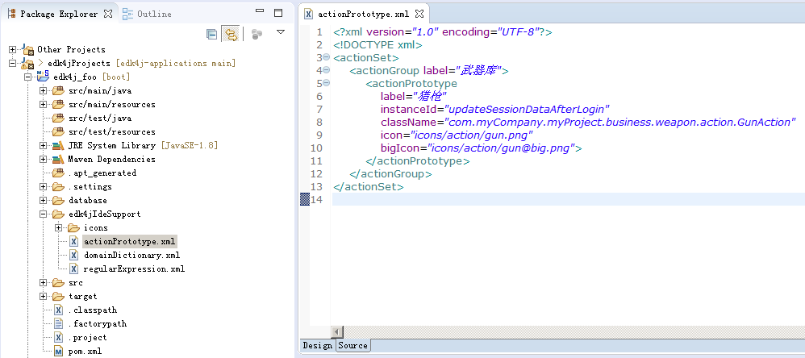

3.2、在bpm编辑器中使用：

<?xml version="1.0" encoding="UTF-8"?> <!DOCTYPE xml> <actionSet> <!--根节点，只能有1个--> <actionGroup> <!--action分组，可以多组并行--> <actionPrototype> <!--具体action，可以多个并行--> <property/> <!--action的属性，可以没有或者有多个属性--> </actionPrototype> </actionGroup> </actionSet>（2）<actionSet>是根标签，内部可以放多个<actionGroup>标签，每个组件分组定义为一个<actionGroup>
<?xml version="1.0" encoding="UTF-8"?> <!DOCTYPE xml> <actionSet> <actionGroup label="分组名称" icon="icons/subFolderLevel1.png或者其他已经预置的图片【可为空】"> <actionPrototype label="组件名称" description="组件的概要解释说明或算法说明【可为空】" instanceId="【可为空】添加到流程图后步骤的默认id值" instanceLabel="【可为空】添加到流程图后步骤的默认label属性值" className="组件实现类的完整类名" icon="【可为空】icons/图片名称.png" bigIcon="【可为空】icons/图片名称.png，如果这个字段不为空，则在流程图中会显示大图" rgb="【可为空】该action的默认颜色，rgb格式：int1, int2, int3，你可以在ide中先编辑一下颜色再抄出来" > <property id="属性id" label="属性名称" description="属性的详细解释，例如用途，配置规范等等" type="该属性在Action类中的成员变量类型，取值范围normal/list，【可为空】" defaultValue="该属性是成员变量的默认值，如果这里设置了，那么在IDE中设计时，该成员变量就会被赋予默认值，知道你改变它【可为空】" valueOption="当该属性设置后，IDE中设置该成员变量的值时，就会从下拉框中进行选择，格式为value1;....valueN，也就是说多个选项值用分号隔离，ide中会自动将这个表达式解析成下拉框" needDialog="当在IDE中编辑该属性时，是否弹出对话框进行编辑，取值范围true/false，默认为false，【可为空】" nullable="是否允许为空，取值范围true/false，默认为true" readOnly="是否只读，取值范围true/false，默认为false，当为true时在IDE中不能编辑该属性" /> [ 其他<property> ] </actionPrototype> [ 其他<actionPrototype> ] </actionGroup> [ 其他<actionGroup> ] </actionSet>